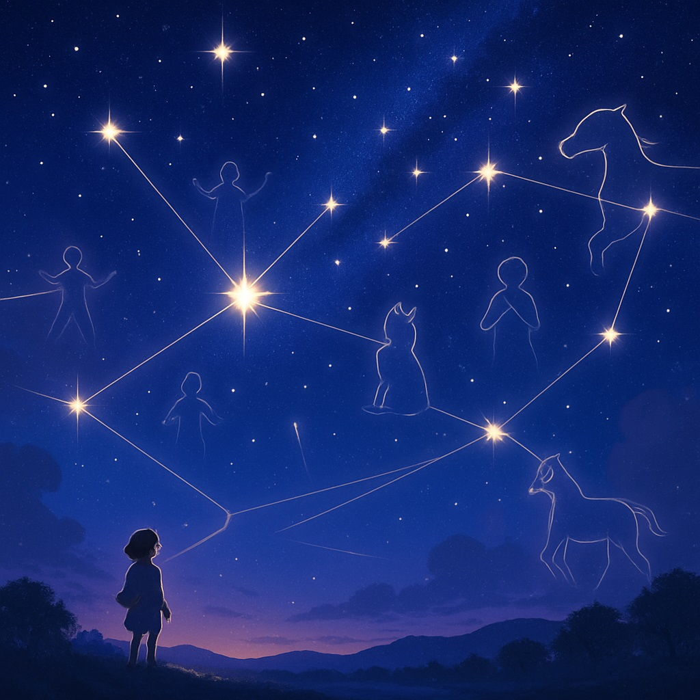
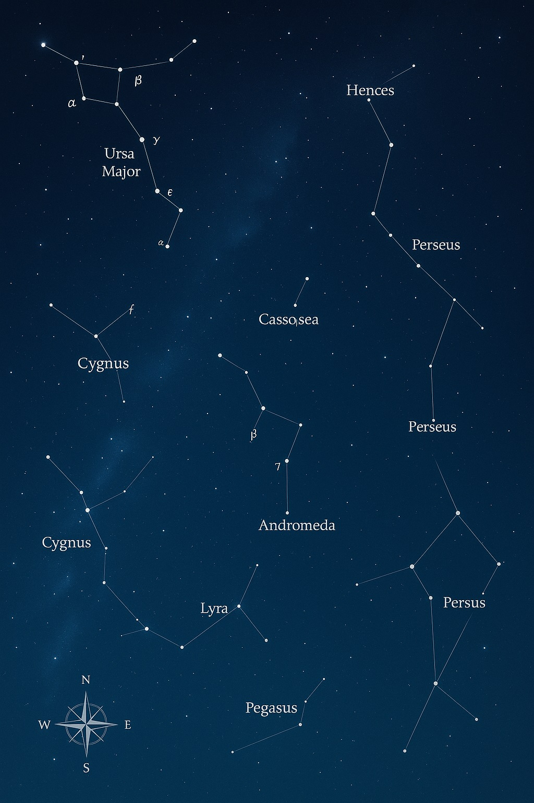
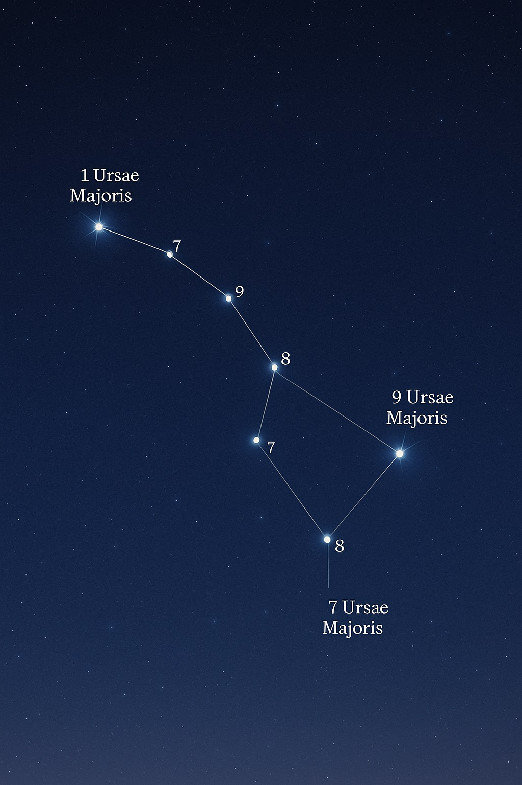
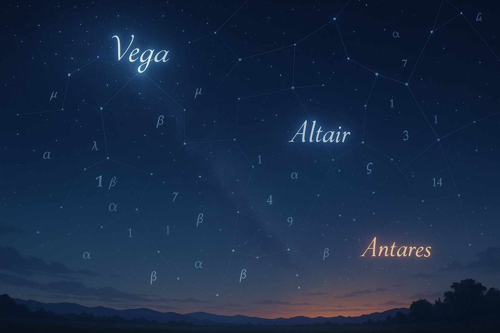
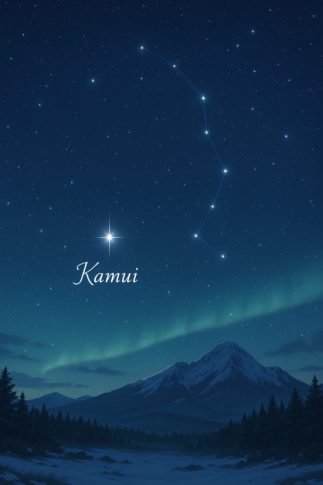
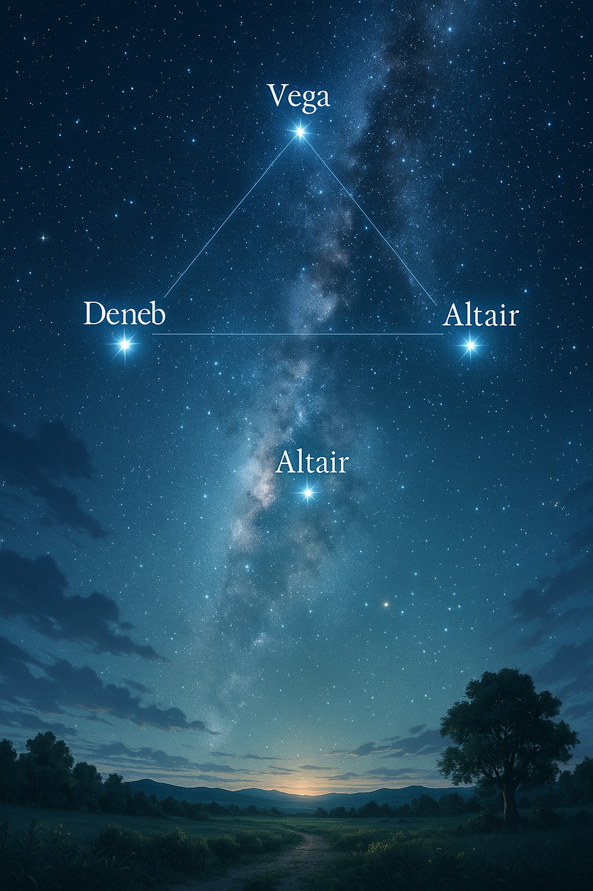
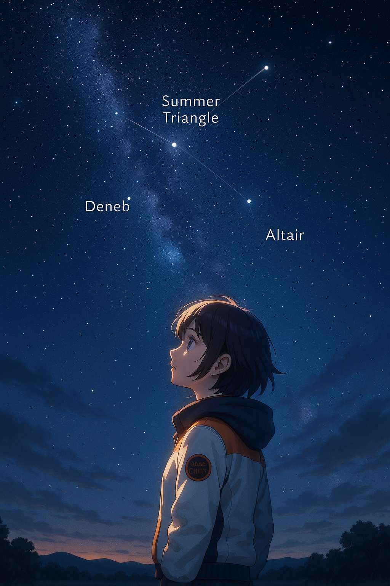

🌌【宙ガール入門③】星に名前をつけた人たち
～すべての星に名前があるの？ 宇宙の「名付け親」の物語～
🌙 ｜「この星、名前あるのかな？…誰がつけたんだろう？」
ある夜、エミリーはいつものようにベランダに出て、きらめく夜空を見上げていました。
「このたくさんの星たち、全部に名前があるのかな？」
ふと、そんな素朴な疑問が頭をよぎります。
私たち人間は、大切なものに名前をつけますよね。生まれたばかりの赤ちゃんには、たくさんの願いを込めて名前を贈ります。ペットを飼えば、家族の一員として愛称をつけます。お気に入りの物や、特別な場所にも、自分だけの呼び名をつけることがあります。名前があることで、私たちはその対象を認識し、親しみを感じ、他のものと区別することができます。
では、宇宙に瞬く無数の星々はどうでしょう？
夜空に散りばめられた光の粒は、数えきれないほどたくさんあります。まるで砂浜の砂粒のように、一つ一つに名前があるなんて、なんだか信じられない気がしますよね。でももし、あの輝く点一つ一つに、誰かの想いや、深い歴史が込められた名前があったとしたら……。
「もし名前があるなら、誰が、いつ、どうやって名前をつけたんだろう？」
「私たちが見上げるこの星にも、遠い昔の人々が託した物語があるのかな？」
そう感じたこと、きっとあなたも一度はあるのではないでしょうか。ただ眺めるだけだった星空が、もし名付けられた星たちの集まりだとしたら、急に親近感が湧いてきませんか？ この記事を読み終える頃には、あなたが夜空を見上げる視線が、きっとこれまで以上に温かく、好奇心に満ちたものに変わっているはずです。
🌌 ｜「すべての星に名前があるの？ 宇宙の命名ルールって？」
プラネタリウムで星のお話をしていると、お客様から本当に様々な質問をいただきます。その中でも、特に多くの方から聞かれるのが、こんな質問です。
「すべての星に名前がついているのですか？」
宇宙空間には、私たちの想像をはるかに超える数の星々が瞬いています。まだ人類が発見していない、あるいは望遠鏡でも捉えきれないほど遠い場所にある星も無数に存在することでしょう。しかし、私たちが現在把握している、あるいは観測されている星のほとんどには、何らかの形で「名前」や「識別番号」がつけられています。
ただ、ここで一つ疑問が生まれます。
- 「アンタレス」や「ベガ」といった、耳にする星の名前は、誰が、どんなルールで決めたの？
- 「こと座のアルファ星」みたいに、同じ星座の中で「アルファ」とか「ベータ」とか、何種類も名前があるのはどうして？
- 「〇〇座〇番星」という番号のような名前もあるけど、これもルールがあるの？
- 日本や他の国にも、私たち独自の星の名前はあったの？
- 昔の人が勝手につけた名前が、今も世界中で使われているって、なんだか不思議じゃない？
夜空の星々に、もし一つ一つ名前があるのだとしたら、その背後にはどんな物語や、どんなルールが隠されているのでしょうか。エミリーも、あなたも、この宇宙の「名付け親」たちの秘密に、一緒に迫ってみましょう。この探求を通して、星々がもっと身近で、愛おしい存在になるはずです。
🌟 ｜星の名前は「宇宙の共通言語」！歴史とルールが織りなす物語
「すべての星に名前がついているのですか？」という質問への答えは、「はい、ほとんどの星には何らかの形で名前や識別子がついています」ということになります。ただし、その「名前」のつけ方には、いくつかの種類と、長い歴史にわたる変遷があるのです。まるで、人間の名前にも「本名」や「ニックネーム」、はたまた「職場のID番号」のようなものがあるのと同じですね。
📜 星の名前のルーツ：昔から現代へ、変遷する命名ルール
星の名前には、大きく分けて3つの主要な「命名ルール」が存在します。
ギリシャ文字と星座名で表す「バイエル符号」
プラネタリウムでよく耳にする「こと座のベガ」や「わし座のアルタイル」の「ベガ」や「アルタイル」は固有名ですが、実はこれには別の呼び方があります。それは、「こと座のアルファ星」や「わし座のアルファ星」といった呼び方です。
これは、17世紀のドイツの天文学者ヨハン・バイエルが考案した命名法で、星座の中で一番明るい星にギリシャ文字の「アルファ（α）」、次に明るい星に「ベータ（β）」、その次に「ガンマ（γ）」…というように、明るい順にギリシャ文字を割り振るというルールです。
例えば、今夏の夜空でひときわ輝く夏の大三角を構成する星を見てみましょう。
- こと座のベガ ⇨ こと座のアルファ星（α星）
- わし座のアルタイル ⇨ わし座のアルファ星（α星）
- はくちょう座のデネブ ⇨ はくちょう座のアルファ星（α星）
そして、南の空に赤く輝くさそり座のアンタレスも、さそり座の中で一番明るい星なので、さそり座のアルファ星（α星）と呼ばれます。 このように、同じ星座の中での相対的な明るさを示すことで、星の位置を特定しやすくしています。これは、まるでクラスの中で「一番背が高い子」や「一番足が速い子」と呼ぶような、分かりやすい識別方法だと言えるでしょう。
西から東への並び順で示す「フラムスティード番号」
もう一つ、特徴的な命名ルールがあります。それは、18世紀のイギリスの天文学者ジョン・フラムスティードが考案した命名法で、星座の中で西から東へ並んでいる順に番号を振っていくというものです。
先ほどの星を例に見てみましょう。
- こと座のベガは、こと座の中で西から数えると3番目にあるので「こと座3番星」となります。
- さそり座のアンタレスは、さそり座の中で西から数えると21番目にあるので「さそり座21番星」と呼ばれています。
これは、まるで「前から3番目の席に座っている子」と呼ぶように、星の位置関係を順序で示す、整理された命名方法です。科学的な観測や記録においては、このような規則的な番号が非常に役立ちます。
古くからの「固有名」と、その世界統一化
「ベガ」や「アルタイル」、「アンタレス」といった、独特の響きを持つ星の名前は、これら「バイエル符号」や「フラムスティード番号」とは少し異なるルーツを持っています。実は、これらの呼び方は、つい最近の2015年くらいまでは、明確な国際的なルールがありませんでした。言わば、地域や文化ごとに自然発生的に生まれた「ニックネーム」のようなものだったのです。
例えば、「こと座のベガ」は、日本では七夕伝説の「おりひめ星」として親しまれていますし、「わし座のアルタイル」は「ひこぼし」と呼ばれています。このように、同じ星であっても、国や地域によって異なる名前で呼ばれることは珍しくありませんでした。
では、「ベガ」や「アルタイル」という名前はどこから来たのでしょうか？
これらの名前の多くは、1000年以上昔からアラビアで使われていた言葉がもとになっています。例えば、「ベガ」はアラビア語で「降りているわし」を意味し、「アルタイル」は「飛んでいるわし」という意味の言葉が語源だと言われています。昔の人々は、空を飛ぶ鳥や動物に見立てて、星々に名前をつけていたのですね。他にも、ギリシャ語やラテン語に由来する名前も多く存在します。
このように、それぞれの地域で、その文化や神話、生活様式に根ざした形で、星の「ニックネーム」がつけられていったのです。これまで、これらの「ニックネーム」は、あくまで学術的な識別番号とは別のものであり、天文学の研究や記録には特に不都合がなかったため、公式に統一されることはありませんでした。
🌍 「世界共通の名前」へ！国際天文学連合の取り組み

しかし、時代は進み、宇宙の観測や研究が国際的に協力して行われるようになるにつれて、「ベガ」や「アンタレス」といった昔からの「固有名」についても、世界中で共通して使える「公式の名前」が必要だという声が高まってきました。科学者同士が研究成果を共有する際に、呼び方が異なると混乱が生じる可能性があるからです。
そこで、登場するのが、国際的な天文学の組織である国際天文学連合（IAU：International Astronomical Union）です。IAUは、星や天体の命名に関する国際的な権限を持つ唯一の機関であり、これまでも星座の境界線や、惑星、小惑星などの命名ルールを定めてきました。
そして、2015年頃から、IAUは星の固有名（ニックネームのような名前）についても、正式なリストを作成し、世界共通の名前として承認する取り組みを始めました。これにより、これまで知られていなかった世界各地の伝統的な星のニックネームが次々と公式名として認められるようになったのです。
このIAUの取り組みによって、世界中の多様な文化が、宇宙の共通言語の中に組み込まれることになりました。例えば、さそり座の星をいくつか見てみましょう。
- アンタレス：ギリシャ語に由来。火星のライバルという意味。
- シャウラ：アラビア語に由来。「（さそりの）毒針」という意味。
- ファン（Funi）：中国に由来。
- ハミディムラ（Hamidimurka）：アフリカ、ナミビアのサン族の言葉に由来。
- ララワグ（Larawag）：オーストラリアのアボリジニの言葉に由来。
- ピピリマ（Pipirima）：タヒチに由来。
- パイカウハレ（Paikauhale）：ハワイに由来。
このように、ギリシャやローマ、アラビア、ヨーロッパといった地域の名前だけでなく、中国、インド、そしてハワイ、南半球の先住民族、アフリカの部族の言葉など、世界中の非常に多様な地域の星の名前が採用されています。これは、宇宙が人類共通の宝物であり、それぞれの文化が持つ宇宙観を尊重しようという、IAUの素晴らしい姿勢を表していると言えるでしょう。
では、日本からはどうかというと、私たちも一つだけ、IAUに公式に認められた固有名を持つ星があります。それは、肉眼では見えず望遠鏡が必要な星ですが、北海道のアイヌの言葉で「カムイ」と名付けられた、かんむり座にある星です。アイヌの人々にとって、カムイは「神」や「精霊」を意味する大切な言葉。この星が「カムイ」と名付けられたことは、日本の豊かな文化が宇宙の共通言語に仲間入りした、大変喜ばしい出来事なのです。
このように、星の名前一つとってみても、そこには人類の壮大な歴史、多様な文化、そして最新の科学的な取り組みが詰まっているのです。それぞれの名前が持つ物語を知ることは、星空をより深く、そして多角的に楽しむことへとつながります。
✨ ｜「夏の大三角」の星の名前、あなたはいくつ知ってる？
さあ、星の名前の奥深さを知ったところで、今夜の夜空、特にこの時期（夏から秋にかけて）見やすい「夏の大三角」の星々を、新しい視点で見上げてみませんか？
「夏の大三角」は、夜9時頃に空高く、頭の上のほうに見える、明るい3つの星でつくる大きな三角形です。
- こと座の「ベガ」：七夕の「おりひめ星」としておなじみですね。アラビア語で「降りているわし」を意味します。
- わし座の「アルタイル」：七夕の「ひこぼし」です。アラビア語で「飛んでいるわし」という意味があります。
- はくちょう座の「デネブ」：アラビア語で「尾」を意味し、はくちょう座の尾にあたる星です。
そして、南の空の低いところには、ひときわ赤く輝く星が見えます。
- さそり座の「アンタレス」：ギリシャ語で「火星のライバル」という意味を持ち、その赤みが特徴です。
これら一つ一つの星に、人類がこれまで紡いできた物語や、科学的な識別子が与えられていることを意識して見上げてみましょう。きっと、これまでとは違う、もっと深い感動を味わえるはずです。
📘 自分だけの「星の名前ノート」を作ってみよう！
今日学んだ知識を活かして、あなただけの「星の名前ノート」を作ってみませんか？
- 見た星の名前（固有名）を書き出す：例：ベガ、アルタイル、デネブ、アンタレス
- その星の「別の呼び方」をメモ：例：こと座のアルファ星、わし座3番星、おりひめ星
- 名前の由来や意味を調べてみる：例：ベガはアラビア語で「降りているわし」
- その星が見える季節や、星座の特徴を書き込む
スマホアプリや図鑑を活用して、気になった星の名前の由来を調べてみるのも楽しいですよ。星の名前一つ一つに隠された物語を知ることで、夜空があなたにとって、さらに豊かな「物語の宝庫」へと変わっていくことでしょう。
🌟 宇宙の共通言語を学ぶ体験を！
IAUが世界共通の星の名前を定めているように、星の名前はまさに「宇宙の共通言語」です。世界中の人々が、同じ名前で同じ星を認識できるということは、宇宙という広大なテーマにおいて、私たち人類が互いに協力し、理解し合うための大切な架け橋となります。
星の名前を通じて、遠い昔の人々の暮らしや文化、そして現代の国際的な科学協力の様子を想像することは、きっとあなたの視野を大きく広げてくれるはずです。
🌠 ｜星は、私たちと宇宙をつなぐ「言葉」
エミリーは、夏の大三角の星たちを眺めながら、こうつぶやきました。
「星にも、たくさんの名前があるんだね。
それは、ただの記号じゃなくて、遠い昔の人たちが空に託した“言葉”なんだ。
そして、その言葉は、今、世界中の人が同じようにわかる“共通の言葉”になってるんだね。」
そう、空に光る星一つ一つが、私たち人類が宇宙と対話し、理解しようと努めてきた証なのです。星の名前を知ることは、単なる知識の習得ではありません。それは、数千年の時を超え、地球上の様々な文化を越えて、私たちと宇宙とを深く結びつける「言葉」を学ぶことなのです。
あなたが今夜、夜空を見上げ、一つの星の名前を口にした時、それは過去の英知と、未来への探求心、そして世界中の人々との繋がりを感じる、特別な瞬間となるでしょう。